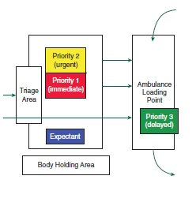

Major Incident Assessment and Medical Management
A major incident occurs when the location, number, severity, or type of live casualties requires extraordinary resources. Major incidents can be:
- Natural of man-made
- Simple or compound
A compound incident occurs when relevant infrastructure (roads, hospitals, and lines of communication) is also disrupted/destroyed. - Compensated or uncompensated
An uncompensated incident occurs when the casualties exceed the resources to treat them. An incident may:- Move from uncompensated to compensated as additional resources are mobilised
- Be more likely to be uncompensated when:
- Surge capacity planning has not occurred
- Resources are lacking
Remote regions are more likely to experience an uncompensated incident for any given casualty load. - Confounding factors
Casualty numbers:
- Major
Incident handled by resources of individual hospitals. - Mass
Incident overwhelms response. May involve closure or evacuation of health facility, or persistent disruption over many days. - Catastrophic
Severe disruption to health and social care and other supportive infrastructure (e.g. water, electricity, transport).
Preparation
Emergency preparation is vital to limiting extent and severity of an incident. Preparedness involves:
- Preparation
- Planning
- Should be all-hazard
Needs to be generic enough to cover all disasters. - Health service plans
- Ambulance service plan
- Internal hospital plans
Based on number and likely type of casualties for the incident.
- High-risk venue plans
e.g. Stadiums, festivals, protests are all high-risk settings. - Government plans
Regional/State/National plans for coordinating resources. - Creating surge capacity
- Inter- and intra-agency written protocols
- Succession planning within organisations
- Backup radio and communication networks
- Equipment stockpiles
- Sources of transport
Agreements to obtain commercial or military vehicles.
- Should be all-hazard
- Equipment
- PPE
- Tools and extraction equipment
- Medical equipment
Appropriate to level of skill and training of providers.
- Training
- Education
Should precede exercise, so the maximum value of the exercise is realised. - Exercises
- May involve:
- Table-top exercises
- Triage exercises with simulated casualties
- Communication exercises
- Practical exercises without casualties
- Virtual responses
- Multi-agency exercises
- Include:
- Level A
Major live multi-agency exercise. - Level B
Major table-top multi-agency exercise. - Level C
Local level exercise examining a specific issue.
- Level A
- May involve:
- Education
- Planning
- Response
- Recovery
Overview of Incident Response
Response from all services involves CSCATT:
- Command and Control
- Scene layout
- Safety
Of:- Self
- Scene
- Survivors
- Communications
Particularly the ETHANE approach. - Assessment
- Hazards
- CCS
- Triage
- Treatment
- Transport
Priorities are to:
- Save life
- Prevent escalation
- Relieve suffering
- Protect property
- Launch inquiries
Medical response is led by the:
- Ambulance Commander
- Medical Commander
Command and Control
Organisations are commanded, situations are controlled, and resources are coordinated
- Command
Held by each emergency service at scene.- Runs vertically in each service
- Control
Held by one service at scene.- Runs horizontally across the services
- In Australia, service in control will depend on the nature of the incident
Ambulance and medical are never a control agency.
- Runs horizontally across the services
Tiers of Command:
- Strategic/Gold Command
- Usually only one Gold Command
- Cross state/national boundaries may require multi-agency gold command
Regional or national ocoordination may be established above this; known as platinum command. - Supports tactical command
- Generally not on site
- Regional emergency operation centre
- Tactical/Silver Command
- Commanders of each service
Co-location of service commanders forms Joint Services Emergency Control. - Located inside the outer cordon
- Allocate resouces to operaetional commanders
- Interservice operational requests are requested at the silver command level
- Commanders of each service
- Operational/Bronze Command
- Multiple bronze commanders dealing with particular sectors
- Oversee operational activities
Commanders do not become involved in casualty treatment.
Layout
Scene layout:
- Outer cordon
Prevents access by general public. Usually established and maintained by police. - Inner cordon
Area around scene, outside of which service facilities are established. Usually established by fire.
Health service response requires:
- Ambulance Command Point
Ambulance command vehicle.- May be co-located with other service command vehicles to form the Joint Services Emergency Control (JSEC)
- Reporting point for all health personnel
- Ambulance Parking Point
Holding bay for ambulances when not on tasking. - Forward Control Point
Area close to the incident, where the forward commander can direct operations. May be multiple forward control points, with multiple forward commanders. - Ambulance Loading Point
Area where ambulances collect casualties from CCS. - Casualty Clearing Station
Point of secondary triage and casualty treatment. Should be:- Safe
- Accessible:
- From the scene
As close as possible without compromising safety. - To evacuation routes
- From the scene
- Sheltered
- Well-lit
- Of appropriate size
- Laid out as follows:
- Equipment in one section
- One entry for patients from the scene
- One exit for patients to Ambulance Loading Point
- Patients with heads easily accessible
- Semi-circle around team leader/provider
- Feet against the wall
- Sections for casualties of each priority
Example of a CCS

Safety
Code of safety is the ‘1-2-3’ of safety: 1. Self * Adequate PPE * Personal identification * Communication tools * Torch 2. Scene 3. Survivors
Prevent further casualties. * Evacuate uninjured survivors
Risk Asseessment:
- Look for hazards
- Decide:
- Who is at risk
- How they are at risk
- Evaluate degree of risk
- Determine how to remove or minimise risk
Safe approaches:
- Approach upwind
Minimise exposure to contamination. - Report to rendevous point
Ensures reporting and appropriate deployment. - Check in with emergency vehicles close to scene
May be standing off. - Aim to stay at least 100m away from incident
Minimise risk of injury from secondary blast. - Retreat if continuous loud noises
May indicate leak present. - Wear maximal PPE
Communication
Poor communication is the commonest failing at the scene of a major incident
Failures of communication occur when there is a lack of:
- Information
- Confirmation
- Coordination
Key messages:
- Major incident - standby
Alerts hospital that a major incident is possible. - Major incident declared
Incident has occured and the response is enacted. - Major incident - cancelled
Above order rescinded.
Methods
- Radio net
- Landlines
- Mobile networks
Reception often poor when net is saturated. - Runners
With handwritten messages.
Radio Procedure
Radio traffic should be:
- Rhythm
Steady rhythm. - Speed
Slower than normal. - Volume
Of adequate volume. - Pitch
Higher pitch is more readable.
Common radio pro-words:
- I SPELL
Next word spelled phonetically. - SAY AGAIN
Request to repeat all of the last transmission.- SAY AGAIN ALL AFTER
Repeat message after a given phrase. - SAY AGAIN ALL BEFORE
Repeat message before a given phrase.
- SAY AGAIN ALL AFTER
- OVER
I have finished talking. - OUT
The conversation is finished. Only to be stated by the party initiating the call. - WAIT 1/2/3/4/5
Wait a given number of seconds. - WAIT OUT
Wait longer than 5 seconds; conversation is over in interim. - RADIO CHECK
Check of strength and readability of radio signal with another call-sign.- Strength
Can be:- Loud
- Good
- Weak
- Very weak
- Fading
- Readability
Can be:- Clear
- Readable
- Distorted
- Unreadable
- With interference
- Strength
- FIGURES
When giving a number; e.g. “sixty, figures six-zero”. - MESSAGE/PREPARE TO COPY
I have to tell you something. - SEND
I am ready to receive your message.
Scene Assessment
Initial assessment:
- Should be rapid
- Determines speed and adequacy of initial response
- Performed using METHANE:
- Major Incident
Advise standby or declared. - Exact Location
Accurate as possible: grid reference, site, landmarks. - Type of Incident
e.g. Road traffic, chemical, rail. - Hazards
Actual and potential. - Access/Egress
Safe direction for approaches and departures. - Number of casualties
May include severity and type. - Emergency services
Present and/or required.
- Major Incident
Ongoing assessment can be covered with HANE.
Triage
Covered in detail under triage.
Triage is:
- The cornerstone of support
- Involves sorting casulaties into treatment priorities
- Requires an appropriate labelling system
- Easily and securely attached
- Marked and colour coded
- Durable and weather resistant
- Able to be written on
- Facilitate rapid and clear re-categorisation
Treatment
Aims to do the most for the most; i.e. maximise utilitarian benefit. May include:
- First aid
Should allow immediate intervention in life-threatening conditions.- May include devices to support respiration
This consumes significant resources and may not be appropriate depending on the number and severity of casulaties relative to the number and expertise of providers.
- May include devices to support respiration
- Advanced Life Support
- Provided at CCS
- Extent of resuscitation attempts will depend on casualty load
- Blood product
- Exceptional circumstances only
- Usually coordinated through local services
- Regular donor centres are usually used to facilitate donation
- Specialist medical intervention
Supplied and supported by medical teams.
Transport
In general:
- Most casualties will be moved to hospital, either by own means or by emergency services
- Prior 3s should be evacuated by non-medical transport en masse to a receiving hospital
Can be placed on buses/civilian transports.
- Prior 3s should be evacuated by non-medical transport en masse to a receiving hospital
- Transport mode based upon:
- Capacity
- Availability
- Suitability
- Evacuation order may not strictly be based upon priority
Considerations:- Current transport modes available
- How stable a given patient is for transfer
Benefit of additional care that can be provided at CCS> - Disease process
e.g. Airway burns. - Definitive care required
- Revised trauma score value
Can be used to subdivide within priority categories.
Service Reponse
Objectives of all services are to:
- Save life
- Prevent escalation of the incident
- Relieve suffering
- Protect the environment
- Protect property
- Rapidly restore normality
- Facilitate enquiries
Ambulance Service Response
Key roles:
- First crew on scene
Duties:- Critical to determining speed of mobilisation
- Senior paramedic should assume role of ambulance commander
- Should find fire (who generally have control), and thereby form a forward command post
- Will be acting silver command until arrival of senior ambulance personnel
Ideally only one HOTO will occur to avoid missed information in handover. - On completion of handover, will generally become a bronze commander
- Junior paramedic will maintain communications with control
Acts as communications officer. - Should not become involved with casualty treatment
Will prevent adequate scene assessment and mobilisation of additional resources. - Leave emergency beacons on
Designates command vehicle. - Designates other roles as more crews arrive on scene
- Ambulance Commander
Duties:- Commands ambulance resources
- Does not perform direct patient care
- Clearly identificable
- Should stay close to command vehicles to facilitate liason
- Duties:
- Liase with medical, police, and fire commander
Liason with medical commander to determine:- Destination for casualties
- Composition of mobile medical teams
- Ensure safety of health service responders
- Endure adequate lines of communication
- Organise transportation for casualties
- Organise equipment
- Liase with medical, police, and fire commander
- Ambulance Communications Officer
Duties:- Provides all health service communication
- Located at ambulance control point
- Provides appropriate communication methodologies
- Logs all health service transmissions
- Forward Ambulance Commander
Commands ambulance resources in a particular operational area.- Number of FACs will depend on size of incident
- Duties:
- Adequate allocation of resources for primar ytriage
- Overseeing trapped casualties
- Supervising casualty evacuation
- Casualty Clearing Officer
Commands CCS. Duties:- Site CCS
- Establishes and oversees secondary triage
- Ensures adequate equipment in CCS
- Liase with ambulance loading officer for transportation and evacuation priorities
- Informs Ambulance Commander about casualty numbers/severity/movements
- Ambulance Loading Officer
Supervises ambulance loading point, and liases with CCS and Ambulance Parking Officer for appropriate transportaion. - Ambulance Parking Officer
Supervises vehicle resources to ensure they are used appropriately, and logs staff and vehicles. Vehicles need to be considered based on:- Capacity
Needed and potential. - Availability
- Suitability
For any given task.
- Capacity
- Ambulance Equipment Officer
Recieves and distrubtes equipment.
State Emergency Service
In Victoria:
- Lead agency for flood, earthquake, wind, tempest and other natural disasters
Defence Force
ADF:
- Does not have a formal role in disaster management
- Can be requested via Defence Assistance to Civil Community
Categorised as:- Category 1
Response within 24 hours if civilian resources are exhausted. - Category 2
- Category 3
- Category 1
- Can mobilise enormous resources and personell at short notice
- Search and Rescue
- Hazard Control
- EOD
- Fire fighting
- Casualty treatment and transport
- Body recovery
- Maintenance of public order
- Provision of food/water/shelter
- Cannot be commanded or have its assets commandeered by other services
Medical/Health Response
Key roles:
- Medical Commander
If present, oversees triage and treatment (whilst ambulance does transport).- Background is less important than the following:
- Major incident management training and experience
- Pre-hospital training and experience
- Understanding of ambulance logistics
- Local knowledge
Hospital facilities/capabilities.
- Duties:
- Responsible for clinical care at scene
- Should not become involved with casualty treatment
- Ensures secondary triage is established
- Performs clinical assessment of scene
- Should not become involved with casualty treatment
- Ensures receiving hospitals receive adequate information
- Liases with ambulance commander for:
- Medical equipment needs
- Destination of casualties
- Responsible for clinical care at scene
- Background is less important than the following:
- Forward Medical Commander/Forward Emergency Medical Officer (FEMO)
Duties:- Supervises clinicians working in the forward area
- No direct involvement with patient care
- Reports to the Medical Commander
- Mobile Medical Team
Duties:- Performs primary triage on scene
- Performs secondary traige at CCS
- Treates live casualties at site and at CCS
- Provides assistance to mobile surgical team
- Confirms death at scene
Victorian Medical Assistance Teams
VMAT:
- Team of experieced doctors and nurses
- Deployed from hospital to provide on-site assessment and emergency treatment
- Can provide extended field care and advanced clinical care
- Report to Forward Medical Commander
Or health commander if no medical commander present.
Management of the Dead
- Diagnosis by a trained clinician
- May be triage service in first instance
- Confirmation must still be a medical officer
- Identification and informing next of kin by police
- Body parts may be labelled without assuming who they belong to
- All live casualties should be evacuated before transport is used for the dead
- Moving of dead is responsibility of police
May be moved to:- Rescue the living
- Prevent destruction of a body
- Temporary mortuary may be established
Only by coronial order. Considerations include:- Capacity
- Low ambient temperature
- Privacy and security
- Adeequate sanitation and waste handling
- Changing and rest areas
- Facility for forensic pathology
- Out of sight of media and public
- Protection from the elements
Police Response
Initial Responsibilities:
- Command and control
- Log of incident
- Media relations
Keep outside of the outer cordon. - Activating support services
NGOs, etc. - Liasing with defence forces
- Prevent escalation
- Provides traffic management
- Maintains public order
- Protection of other services
- Protects property
- Criminal investigation
- Establishes outer cordon to prevent access by general public
- Assistance to other services
Fire Response
- Response is pre-determined
Protocolised deployment of resources based on type of incident. - Establish forward control piont
- Prevent escalation
- Fight fire
- Extricate trapped casulaties
- Route clearance
- Provision of specialist equipment
e.g. Lights, tentage, lifting. - Mass decontamination
- Assistance to other services
Media Handling
Media can be:
- Useful to incident commanders
Broadcast information to off-duty staff, etc. - A major hindrance
May:- Contaminate scene
- Obstruct emergency services
- Intrude on patient dignity
Media Management
- Responsibility of police
- Requires a balance of providing information to satisfy journalists, and prevent harm to scene and personnel
Achieved with:- Restrictions
- Create a media rendevous point
- Restrict access to scene
- Provision of information
- Media Liason Officer
- Media rendevous point
- Regular information updates
- Parking for broadcast vehicles
Not obstructing access routes.
- Restrictions
Special Incidents
Include:
- Hazardous Materials
Accidental release of a substance that results in:- Illness/injury
- Denial of access to an area
- Interruption to food chain
- CBRN incidents
- High paediatric casualties
Requires specialised equipment and staffing. May involve evacuation to paediatric centres far from incident location. - High burns casualties
- Requires attendance by burns assessment team
Usually registrar/specialist and burns nurse deployed to each ED. - Often requires evacuation to centres far from incident location
- Requires attendance by burns assessment team
Scene Considerations in Hazmat and CBRN
Determine the:
- Cold zone
Uncontaminated area between inner and outer cordons. - Warm zone
Area contaminated by movement of people and vehicles to and from the hot zone. - Hot zone
Contaminated area where substances disperse to.
Look for signs of contamination:
- Dead birds/fish/insects
- Physical symptoms
- Mass casualties
- Unusual liquid droplets
- Oily film on water
- Dead plant life
- Unexplained odours
Fruit, flowery, sharp, pungent, garlic, hay. - Cloud and fog unexplained by prevailing weather
Considerations:
- Emergency service liason
- Product identification
- Symptomatology
- Antidotes
- Management of decontamination`
Decontamination
For persons who have contacted the substance. Decontamination:
- Run by a Decontamination Control Officer
Reports to Ambulance Commander. - Includes:
- Clinical decontamination
Usually ‘rinse, wipe, rinse’ by trained health care professionals. - Interim decontamination
Single individual shower. - Improvised decontamination
e.g. Using fire hose. - Mass decontamination
Specially constructed tents for showering multiple people at a time. Usually include a method for decontaminating persons on stretchers as well.
- Clinical decontamination
Incident Management System
- Integrated all-service response to hostile events
- Divided into hot/warm/cold zones
Borders protected by armed police.- Hot zone
Active shooter. - Warm zone
Injured/escaped casualties evacuated here. - Cold zone
All agency response assets sited here.
- Hot zone
References
- Advanced Life Support Group (Manchester, Kevin Mackway-Jones, and ProQuest (Firm). Major Incident Medical Management and Support the Practical Approach to Pre-Hospital Incident Command. Chichester, West Sussex, U.K.: Wiley-Blackwell, 2012.